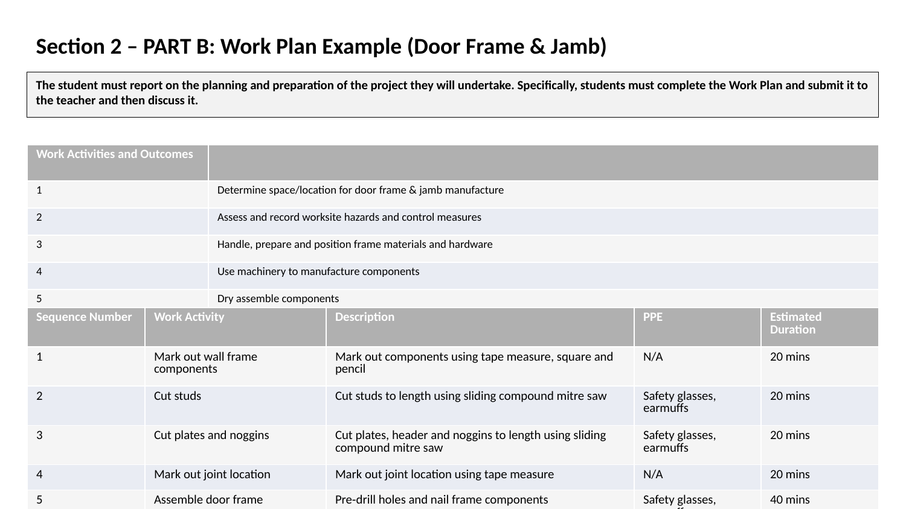
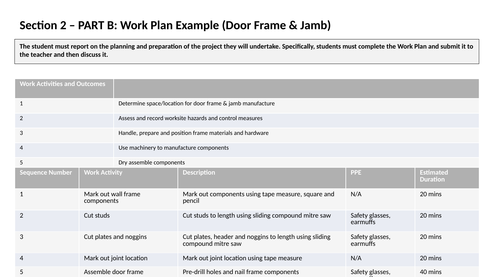

Understanding Knock-Down (KD) Fittings
Knock-down fittings are pre-fabricated connectors that allow furniture and joinery to be assembled and disassembled easily. They are essential for flat-pack furniture.
Cam-Lock Fitting
Description: A two-part fitting consisting of a cam (a round disc with a spiral slot) and a dowel with a head. When the cam is turned with a screwdriver, it pulls the dowel in, tightening the joint. It's a concealed fixing ideal for securing two perpendicular pieces.
Common Use: The primary fitting used in flat-pack cabinets, cupboards, and shelving units.
Cross Dowel (or Joint Connector Nut) and Bolt
Description: A cylindrical metal nut (the cross dowel) is inserted into a hole drilled in one piece of timber. A bolt is then passed through a hole in the second piece and screwed into the cross dowel, pulling the two pieces together.
Common Use: Bed frames, tables, and other furniture requiring a strong, right-angled joint that can be disassembled.
Insert Nut and Bolt
Description: An insert nut is a threaded sleeve that is screwed or pressed into a piece of timber, providing a strong, permanent machine thread. A bolt can then be used to attach another component.
Common Use: Attaching legs to tables or providing a strong fixing point in softwoods or particleboard.
Concealed Hinge (or European Hinge)
Description: A hinge that is completely hidden from view when the cabinet door is closed. It requires a large hole (usually 35mm) to be drilled in the back of the door for the hinge "cup" to sit in.
Common Use: Virtually all modern kitchen and bathroom cabinet doors.
Benchtop Connector (or Dog Bone Connector)
Description: A metal connector shaped like a dog bone with threaded ends. It sits in routed recesses on the underside of two benchtops and is tightened with nuts to pull the two sections together, creating a tight, seamless join.
Common Use: Joining kitchen benchtop sections to form an L-shaped or U-shaped benchtop.
Joinery Unit Assembly Processes
Different joinery units require different assembly methods and joints.
- Multi-Panelled Door: Typically uses strong, traditional joints like mortice and tenons to connect the outer frame (stiles and rails). The inner panels then sit in a groove or rebate cut into the inside edge of the frame.
- Door Frame and Jamb: The rough opening (door frame) in a wall is often made with simple butt joints and nails. The door jamb (the finished lining that the door hangs in) is then fitted inside this opening, often using housing or rebate joints at the corners and fixed in place with screws and packers (wedges).
- Carcass Unit (Cupboard): The main box structure is typically assembled with simple butt joints and secured with screws or, more commonly, knock-down fittings like cam-locks. The back panel is often rebated or simply nailed on.
Sample Work Plan & JSA Sheets
Below are example work plans, job safety analyses and materials lists for various joinery projects. They demonstrate the format and level of detail expected, but the content differs from your assessment tasks.

 
